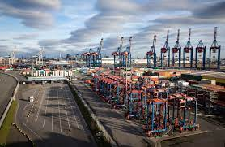
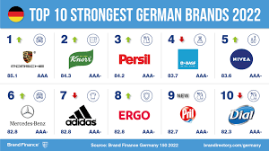

German economy
The economy of Germany is a highly developed social market economy. It has the largest
national economy in Europe, the fourth-largest by nominal GDP in the world, and fifth
by GDP (PPP). In 2017, the country accounted for 28% of the euro area economy according
to the International Monetary Fund (IMF). Germany is a founding member of the
European Union and the Eurozone.
In 2016, Germany recorded the highest trade surplus in the world, worth $310 billion.
This economic result made it the biggest capital exporter globally. Germany is one of
the largest exporters globally with $1810.93 billion worth of goods and services
exported in 2019. The service sector contributes around 70% of the total GDP, industry
29.1%, and agriculture 0.9%. Exports accounted for 41% of national output. The top 10
exports of Germany are vehicles, machinery, chemical goods, electronic products,
electrical equipment, pharmaceuticals, transport equipment, basic metals, food products,
and rubber and plastics. The economy of Germany is the largest manufacturing economy
in Europe, and it is less likely to be affected by a financial downturn. Germany conducts
applied research with practical industrial value and sees itself as a bridge between the
latest university insights and industry-specific product and process improvements. It
generates a great deal of knowledge in its own laboratories.

German brands
Germany is rich in timber, lignite, potash and salt. Some minor sources of natural gas
are being exploited in the state of Lower Saxony. Until the German reunification, the
German Democratic Republic mined for uranium in the Ore Mountains (see also: SAG/SDAG
Wismut). Energy in Germany is sourced predominantly by fossil fuels (30%), with wind
power in second place, then nuclear power, gas, solar, biomass (wood and biofuels) and
hydro.[38] Germany is the first major industrialized nation to commit to the renewable
energy transition called Energiewende. Germany is the leading producer of wind turbines
in the world. Renewables produced 46% of electricity consumed in Germany (as of 2019).
99 percent of all German companies belong to the German "Mittelstand", small and
medium-sized enterprises, which are mostly family-owned. Of the world's 2000 largest
publicly listed companies measured by revenue, the Fortune Global 2000, 53 are
headquartered in Germany, with the Top 10 being Allianz, Daimler, Volkswagen, Siemens,
BMW, Deutsche Telekom, Bayer, BASF, Munich Re and SAP.
Germany is the world's top location for trade fairs. Around two thirds of the world's
leading trade fairs take place in Germany. The largest annual international trade
fairs and congresses are held in several German cities such as Hanover, Frankfurt, Cologne,
Leipzig and Düsseldorf.